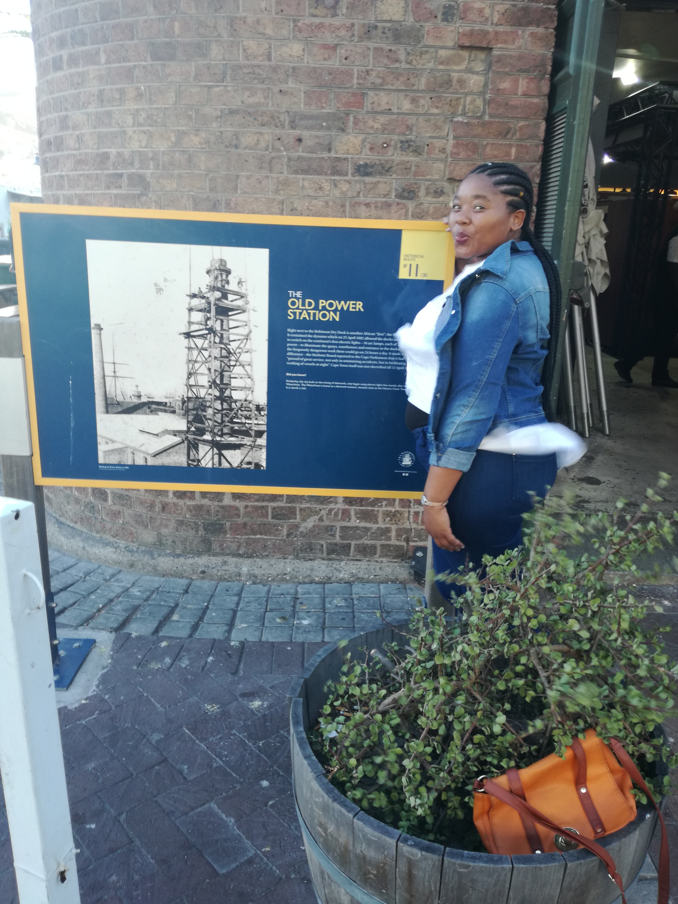

The place i would like to vist is Joburg

The region surrounding Johannesburg was originally inhabited by San people.
By the 13th century, groups of Bantu-speaking people started moving southwards
from central Africa and encroached on the indigenous San population.
By
the mid-18th century,villages,towns,chiefdoms and kingdoms stretched
from what is now Botswana in the west, to present day Lesotho in the south,
to the present day Pedi areas of the northern Transvaal in which Johannesburg,
is
situated.
THE FOREIN LANGUAGE THAT I WOULD LIKE TO LEARN ITALIAN
Why i would like to learn italian.As a native English speaker,there are many words in the italian languge which are familiar,Approximately 30% of words in the English language are of latin origin.
| ENGLISH PHRASE |
FOREIGN LANGUAGE |
| Hello |
Chiao |
| What is your name |
come ti chiami |
| respond |
respondere |
| Thank you |
grazi |
| goodbye |
addio |

The African Trading Post is located in the heart of the V&A Waterfront.
Its housed in the gorgeous historical Old Port Captain’s Building painted grey & white.
There are numerous sculptures outside the building which are also extremely interesting.
Basically the Trading Post sells an array of African objects including local artist paintings, sculpture, artefact's, ceramics, pottery, bronze ware and glassware.
Its a fabulous place to stroll.
PORTS WOODRIDGE
PortsWoodRidge was built in 1870.Surounded by beautiful houses,Boutique
hotel and Spa.There are many tourism visited PortsWoodridge especially in
heritage,because they found a diffent culture and traditional things

the power station supplied electricity to the Somerset Hospital,
the Royal Observatory, the public library (today the National Library), the Houses of Parliament,
the Old Somerset Hospital, the Cape Town Railway Station,
the Post and Telegraph Office and the Grand Hotel.
The first four buildings still exist.